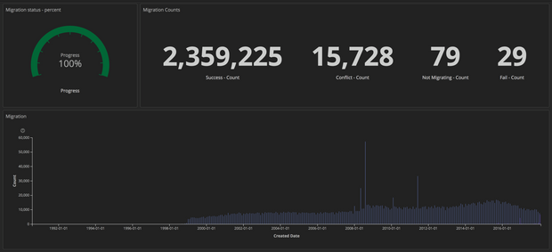
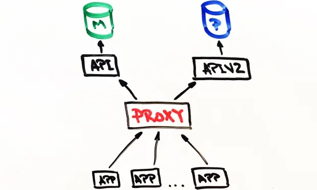
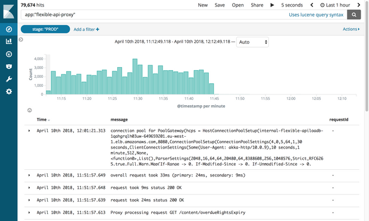

Fri 30 Nov 2018 10.36 GMT
原文地址 https://www.theguardian.com/info/2018/nov/30/bye-bye-mongo-hello-postgres
In April the Guardian switched off the Mongo DB cluster used to store our content after completing a migration to PostgreSQL on Amazon RDS. This post covers why and how
At the Guardian, the majority of content – including articles, live blogs, galleries and video content – is produced in our in-house CMS tool, Composer. This, until recently, was backed by a Mongo DB database running on AWS. This database is essentially the “source of truth” for all Guardian content that has been published online – approximately 2.3m content items. We’ve just completed our migration away from Mongo to Postgres SQL.
Composer, and its database, originally started their lives in Guardian Cloud – a data centre in the basement of our office near Kings Cross, with a failover elsewhere in London. Our failover procedures were put to the test rather harshly one hot day in July 2015
After this, the Guardian’s migration to AWS became that bit more urgent. We decided to purchase OpsManager – Mongo’s database management software – along with a Mongo support contract – to help with the cloud migration. We used OpsManager to manage backups, handle orchestration and provide monitoring for our database cluster.
Due to editorial requirements, we needed to run the database cluster and OpsManager on our own infrastructure in AWS rather than using Mongo’s managed database offering. This was non-trivial, as Mongo didn’t provide any tooling for getting set up easily on AWS – we needed to hand write the cloudformation to define all the infrastructure, and on top of that we wrote hundreds of lines of ruby scripts to handle installation of monitoring/automation agents and orchestration of new DB instances. We ended up having to run knowledge sharing sessions about database management in the team – something we’d hoped OpsManager would make easy.
Since migrating to AWS we’ve had two significant outages due to database problems, each preventing publication on theguardian.com for at least an hour. In both occasions neither OpsManager nor Mongo’s support agents were able to help us much, and we ended up solving the problem ourselves – in one case thanks to a member of the team picking up the phone from a desert on the outskirts of Abu Dhabi. Each of the issues could warrant a whole blog post in themselves, but the general take away points were:
Clocks are important – don’t lock down your VPC so much that NTP stops working.
Automatically generating database indexes on application startup is probably a bad idea.
Database management is important and hard – and we’d rather not be doing it ourselves.
OpsManager didn’t really deliver on its promise of hassle-free database management. For instance, actually managing OpsManager itself – in particular upgrading from OpsManager 1 to 2 – was very time consuming, and required specialist knowledge about our OpsManager setup. It also didn’t deliver on its “one-click upgrade” promise, due to changes in the authentication schema between different versions of Mongo DB. We lost at least two months of engineering time a year doing this database management work.
All of these problems, combined with the hefty annual fee we were paying for the support contract and OpsManager, left us looking for an alternative database option, with the following requirements:
Minimal database management required.
Encryption at rest supported.
A feasible migration path from Mongo.
Since all our other services are running in AWS, the obvious choice was DynamoDB – Amazon’s NoSQL database offering. Unfortunately at the time Dynamo didn’t support encryption at rest. After waiting around nine months for this feature to be added, we ended up giving up and looking for something else, ultimately choosing to use Postgres on AWS RDS.
“But postgres isn’t a document store!” I hear you cry. Well, no, it isn’t, but it does have a JSONB column type, with support for indexes on fields within the JSON blob. We hoped that by using the JSONB type, we could migrate off Mongo onto Postgres with minimal changes to our data model. In addition, if we wanted to move to a more relational model in future we’d have that option. Another great thing about Postgres is how mature it is: every question we wanted to ask had in most cases already been answered on Stack Overflow.
From a performance perspective, we were confident Postgres could cope – whilst Composer is a write-heavy tool (it writes to the database every time a journalist stops typing) – there are normally only a few hundred concurrent users – not exactly high performance computing!
Part two – two decades of content migrated, no downtime
Plan
Most database migrations involve the same steps and ours was no exception. Here are the steps we took to migrate the database:
Create the new database.
Create a way to write to the new database (new API).
Create a proxy that sends traffic to both the old and the new database, using the old one as primary.
Migrate records from the old database into the new.
Make the new database the primary.
Delete the old database.
Given that the database we were migrating powers our CMS, it was important the migration caused as little disruption as possible for our journalists. After all, the news never stops.
New API
Work began on the new Postgres-powered API towards the end of July 2017. And so our journey begins. But to understand the journey we need to first understand where we started from.
Our simplified CMS architecture was something like this: a database, an API, and several apps talking to it (such as the web frontend). The stack was, and still is, built using Scala, Scalatra Framework and Angular.js and it is about four years old.
After some investigation we concluded that before we could migrate existing content, we needed a way to talk to the new PostgreSQL database and still have the old API running as usual. After all, the Mongo database is our source of truth. It offered us a safety blanket while experimenting with the new API.
This is one of the reasons why building on top of the old API wasn’t an option. There was very little separation of concern in the original API and MongoDB specifics could be found even at the controller level. As a result the task of adding another database type in the existing API was too risky.
We went down a different route instead and duplicated the old API. And this is how APIV2 was born. It was more or less an exact replica of the Mongo one and included the same endpoints and functionality. We used doobie, a pure functional JDBC layer for Scala, added Docker for running locally and testing, and improved logging and separation of concerns. APIV2 was going to be a fast and modern API.
By the end of August 2017 we had a new API deployed that was using PostgreSQL as its database. But this was only the beginning. There are articles in the Mongo database that were first created over two decades ago and all of these needed to be moved to the Postgres database.
Migration
We need to be able to edit any article on the site regardless of when they were published, so all articles exist in our database as the single “source of truth”.
Although all of the articles live in the Guardian’s Content API (CAPI), which powers the apps and website, getting the migration right was key as our database is the ‘source of truth’. If anything were to happen to the CAPI’s Elasticsearch cluster then we would reindex it from Composer’s database.
Therefore, before turning off Mongo we had to be confident that the same request on the Postgres powered API and the Mongo-powered API would return identical responses.
To do this we needed to copy all content to the new Postgres database. This was done using a script that talked directly to the old and new APIs. The advantage of doing it this way was that the APIs already provided a well tested interface for reading and writing articles to and from the databases, as opposed to writing something that accessed the relevant databases directly.
The basic flow for the migration was:
Get content from Mongo.
Post content to Postgres.
Get content from Postgres.
Check that the responses from one and three are identical
A database migration has only really gone well if your end users are completely unaware that it has happened and a good migration script was always going to be an essential part of this.
With this in mind we needed a script that could:
Make HTTP requests.
Ensure that after migrating a piece of content, the response from both APIs matched.
Stop if there was an error.
Produce detailed logs to help diagnose issues.
Restart from the correct point after an error.
We started off using Ammonite. Ammonite allows you to write scripts in Scala, which is the primary language on our team. This was a good opportunity to experiment with something we’d not used before to see if it would be useful for us. Although Ammonite allowed us to use a familiar language there were downsides. Whilst Intellij now supports Ammonite, at the time it did not, which meant we lost autocomplete and automatic imports. It was also not possible to run an Ammonite script for an extended period of time.
Ultimately Ammonite was not the right tool for the job and we used an sbt project instead to perform the migration. The approach we took allowed us to work in a language we were confident in and perform multiple ‘test migrations’ until we were confident to run it in production.
What was unexpected was how useful this would be in testing the Postgres API. We found several subtle bugs and edge cases in the new API that we had not found before.
Fast forward to January 2018, and it was time to test a complete migration in CODE, our pre-production environment.
Similar to most of our systems, the only similarity between CODE and PROD is the version of the application they are running. The AWS infrastructure backing the CODE environment was far less powerful than PROD simply because it receives far less usage.
Running a migration on CODE would help us to:
Estimate how long a migration on PROD would take.
Assess what impact, if any, a migration would have on performance.
In order to get an accurate measurement of these metrics, we had to match the two environments. This involved restoring a backup of the PROD mongo database into CODE and updating the AWS backed infrastructure.
Migrating just over 2m items of content was going to take a long time, certainly more than office hours. So we ran the script in a screen session overnight.
In order to measure the progress of the migration, we shipped structured logs (using markers) to our ELK stack. From here, we could create detailed dashboards, tracking the number of articles successfully migrated, the number of failures and the overall progress. Additionally, these were displayed on a big screen near the team to provide greater visibility.

Once the migration had finished, we employed the same techniques to check each document in Postgres matched Mongo.
Part three – Proxy and running in production

Proxy
Now that the new Postgres-powered API was running we needed to test it with real life traffic and data access patterns to ensure it was reliable and stable. There were two possible ways to achieve this: update each client that talks to the Mongo API to talk to both APIs; or run a proxy that’ll do this. We wrote a proxy in Scala using Akka Streams.
The proxy was fairly simple in its operation:
Accept traffic from a load balancer.
Forward the traffic to the primary api and return.
Asynchronously forward the same traffic to the secondary api.
Calculate any difference between the two responses and log them.
At the start, the proxy was logging a lot of differences between the responses of the two APIs, surfacing some very subtle but important behavioural differences in the APIs that needed to be fixed.
Structured logging
The way we do logging at the Guardian is by using an ELK stack. Using Kibana gave us the flexibility to surface logs in a way that would be most useful to us. Kibana uses the lucene query syntax that is fairly easy to learn. But we soon realised that filtering out logs or grouping them was not possible in the current setup. For example, we weren’t able to filter out logs sent as a result of GET requests.
Our solution was to send more structured logs to Kibana rather than sending only a message. One log entry contains multiple fields, like the timestamp, the name of the app that sent the log or the stack. Adding new fields programmatically is very easy. These structured fields are called markers and they can be implemented using the logstash-logback-encoder library. For each request we extracted the useful information (eg path, method, status code) and created a map with the additional information we needed to log. Have a look at the example below.
import akka.http.scaladsl.model.HttpRequest
import ch.qos.logback.classic.{Logger => LogbackLogger}
import net.logstash.logback.marker.Markers
import org.slf4j.{LoggerFactory, Logger => SLFLogger}
import scala.collection.JavaConverters._
object Logging {
val rootLogger: LogbackLogger = LoggerFactory.getLogger(SLFLogger.ROOT_LOGGER_NAME).asInstanceOf[LogbackLogger]
private def setMarkers(request: HttpRequest) = {
val markers = Map(
"path" -> request.uri.path.toString(),
"method" -> request.method.value
)
Markers.appendEntries(markers.asJava)
}
def infoWithMarkers(message: String, akkaRequest: HttpRequest) =
rootLogger.info(setMarkers(akkaRequest), message)
}
The additional structure in our logs allowed us to build useful dashboards and add more context around our diffs, which helped us identify some of the smaller inconsistencies between the APIs.
Replicating traffic and proxy refactoring
Having migrated content into the CODE database we ended up with an almost exact replica of the PROD database. The major difference was CODE had no traffic. For replicating real traffic into the CODE environment we used an open-source tool called GoReplay (gor). It’s very easy to set up and it’s customisable to suit your requirements.
As all traffic coming into our APIs was hitting the proxy first it made sense to install gor on the proxy boxes. See below how to download gor on your box and how to start capturing traffic on port 80 and send it to another server.
wget https://github.com/buger/goreplay/releases/download/v0.16.0.2/gor_0.16.0_x64.tar.gz
tar -xzf gor_0.16.0_x64.tar.gz gor
sudo gor --input-raw :80 --output-http http://apiv2.code.co.uk
Everything worked fine for a while, but very soon we experienced an outage on production when the proxy became unavailable for a couple of minutes. Upon investigation we found all three boxes on which the proxy was running cycled at the same time. Our suspicion was that gor was using too many resources and was causing the proxy to fall over. On further investigation we found in the AWS Console that the boxes had been regularly cycling, but not at the same time.
Before going any deeper, we tried to find a way to still run gor, but this time without putting any more pressure on the proxy. The solution came from our secondary stack for Composer. This stack is only used in case of emergency and it has our production monitoring tool constantly running tests against it. Replaying traffic from this stack to CODE at double the speed worked without any issues this time.
The new findings raised a lot of questions. The proxy had been built with the idea that it would only exist temporarily, so it perhaps hadn’t been as carefully designed as other apps. Also, it was built using Akka Http, which none of the team members had used before. The code was messy and full of quick fixes. We decided to start a big refactoring job to improve readability that included using for comprehensions instead of the growing nested logic we had before, and adding even more logging markers.
We were hoping that by taking time to understand how everything worked and by simplifying the logic we’d be able to stop the boxes from cycling. But this didn’t work. After about two weeks of trying to make the proxy more reliable we were starting to feel like we were falling deeper and deeper down a rabbit hole. A decision had to be made. We agreed to take the risk and leave it as it was better to spend the time on the actual migration than trying to fix a piece of software that was going to be gone in a month’s time. We paid for this decision by going through two more production outages, each lasting about two minutes, but overall it was the right thing to do.
Fast forward to March 2018 and we had now finished migrating CODE, with no detrimental impact on performance of the API or user experience in the CMS. We could now start to think about decommissioning the proxy in CODE.
The first stage of this was to change the priorities of the APIs, so that the proxy talked to Postgres first. As previously mentioned this was configuration based. However there was one complexity.
Composer sends messages on a Kinesis stream when a document has been updated. In order to avoid message duplication, only one API should send these messages. The APIs have a flag in configuration for this; the value was true for the Mongo backed API and false for the Postgres backed one. Simply changing the proxy to talk to Postgres first wasn’t enough as the message wouldn’t get sent on the Kinesis stream until the request reached Mongo too. This was too late.
To solve this, we created HTTP endpoints to change the config in memory across all instances in the load balancer instantaneously. This allowed us to very quickly switch which API was primary without needing to edit a config file and redeploy. Additionally, this could be scripted, reducing human interaction and error.
Now all requests were going to Postgres first and API2 was talking to Kinesis, the change could be made permanent via config and a redeploy.
The next stage was to remove the proxy entirely and get clients to solely talk to the Postgres API. As there are numerous clients, updating each of them individually wasn’t really viable. Therefore, we pushed this up to the DNS. That is, we created a CNAME in DNS that, at first, pointed to the proxy’s ELB and would change to point to the API ELB. This allowed a single change to be made rather than updating each individual client of the API.
It was now time to migrate PROD. Although slightly scary because, well, it’s production. The process was relatively simple as everything was based on configuration. Additionally, as we add a stage marker to the logs, it was also possible to repurpose the previously built dashboards simply by updating the Kibana filter.
Switching off the proxy and MongoDB

Ten months and 2.4m migrated articles later, we were finally in a position to switch off all the Mongo related infrastructure. But first, the moment we’d all been waiting for: kill the proxy.
This small piece of software caused us so many issues we couldn’t wait to turn it off! All we needed to do was update the CNAME record to point directly at the APIV2 load balancer.
The team gathered around one computer. The switch was one click away. No one was breathing anymore. Complete silence. Click! And the change was out. Nothing broke! We all relaxed.
Unexpectedly, deleting the old MongoDB API was another challenge. While frantically deleting old code we found that our integration tests have never been changed to use the new API. Everything turned red quickly. Fortunately, most of the issues were configuration related and therefore easy to fix. But there were a couple of issues with the PostgreSQL queries that were caught by the tests. Trying to think of things we could have done to avoid this error, we realised that when starting a big piece of work you also have to accept that you’re going to make mistakes.
Everything that came afterwards worked smoothly. We detached all the Mongo instances from OpsManager and then terminated them. The only thing left to do was celebrate. And get some sleep.
Since you’re here …
… we have a small favour to ask. Three years ago we set out to make The Guardian sustainable by deepening our relationship with our readers. The same technologies that connected us with a global audience had also shifted advertising revenues away from news publishers. We decided to seek an approach that would allow us to keep our journalism open and accessible to everyone, regardless of where they live or what they can afford.
More than one million readers have now supported our independent, investigative journalism through contributions, membership or subscriptions, which has played such an important part in helping The Guardian overcome a perilous financial situation globally. We want to thank you for all of your support. But we have to maintain and build on that support for every year to come.
Sustained support from our readers enables us to continue pursuing difficult stories in challenging times of political upheaval, when factual reporting has never been more critical. The Guardian is editorially independent – our journalism is free from commercial bias and not influenced by billionaire owners, politicians or shareholders. No one edits our editor. No one steers our opinion. This is important because it enables us to give a voice to those less heard, challenge the powerful and hold them to account. Readers’ support means we can continue bringing The Guardian’s independent journalism to the world.